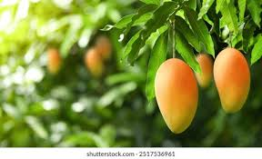
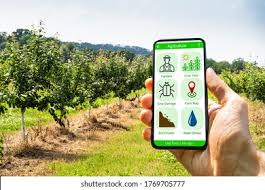
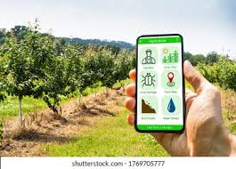
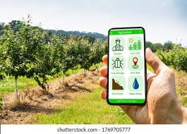
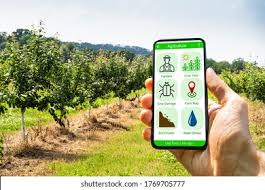

The Irrigation Challenge & Our Solution

 


Malihabad's mango farmers face severe irrigation challenges...
Empower your farm with smart irrigation and data-driven insights.
Get Started

Malihabad's mango farmers face severe irrigation challenges...
Step 1: Register with KVK

Step 2: Install Smart Sensors

Step 3: Get Real-Time Advisories

My name is R. Palanisamy, a second-generation coconut farmer from Hosur, Tamil Nadu. For over two decades, I relied on traditional irrigation methods—mainly manual watering and basic timers. But in 2023, I switched to a smart irrigation system developed by Mobitech Wireless Solution Pvt. Ltd., and my farming life changed forever.